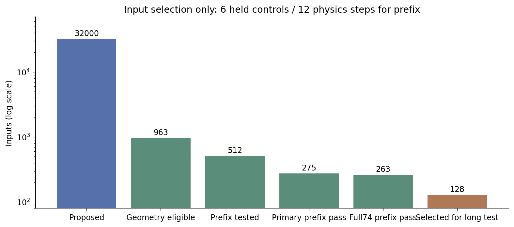
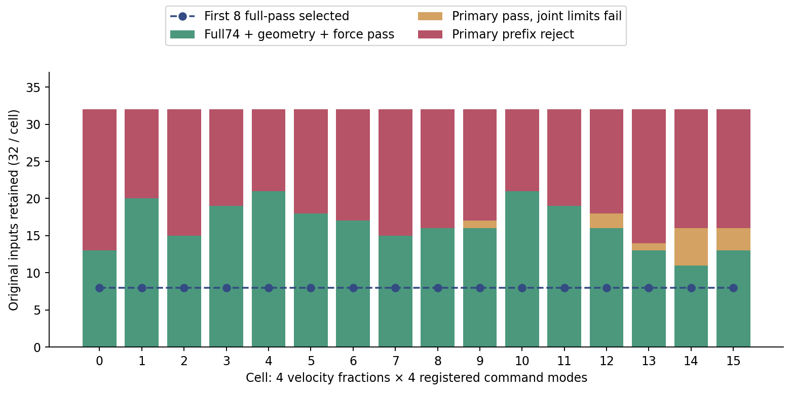
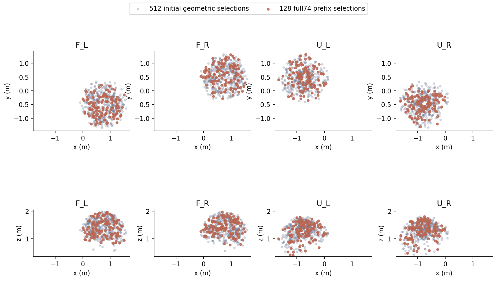

随机范围扩大后，哪些初态真的通过了物理准入
实验日期：2026-10-09。此页只整理已经闭合的 32,000 姿态几何检查与 512 条短物理轨迹。后续 128 条、三策略、480 控制步比较已预登记并启动，完整结果尚未闭合。
263/512 是 6 个保持控制步、12 个物理步的初态联合准入结果。没有执行完整随机指令，也没有物体夹持或协同任务；它不能证明长期安全。此前 64 条保持回退验证抑制了动作，路径中位数只有原始策略 0.197%，动作抑制不等于任务成功。查看已经完成的三策略效果。
31,036 个姿态存在负间隙，另 1 个非负但未达到 0.1 mm 初始缓冲。所有提案和所有物理拒绝项均保留。8 个原生批次及独立复核实际退出均为 0；16 个组合各有 32 条原始样本、取前 8 个联合合格样本，短缺为 0。

随机性扩大了哪些维度
26 个受控关节在完整软限位范围独立均匀采样；初速度随机支持范围为关节限速的 0%、50%、75%、100%，正负方向均采样。指令预先冻结，四种模式为局部 ±0.35 rad 每8步刷新、全软限位每8步、每1步、每32步刷新。短物理测试只保持初始目标，指令模式标签用于预定后续分组，不能当成已经执行的动作。
姿态种子 1920573461；速度种子 740913527；指令种子 1046309821。四臂安装位置、手部姿态及保持目标固定，未加入物体、根部随机化或训练策略。手部初始位置与保持目标分别保留其原始数值。
| 筛选阶段 | 样本 | 单关节跨度范围 | 关节对网格最小 | 中位 | 最大 |
|---|---|---|---|---|---|
| proposed32000 | 32000 | 99.98–100.00% | 100% | 100% | 100% |
| geometry_eligible963 | 963 | 87.20–99.99% | 53% | 100% | 100% |
| first_geometric512 | 512 | 87.20–99.90% | 48% | 98% | 100% |
| full74_prefix263 | 263 | 74.64–99.77% | 40% | 87% | 98% |
| selected128 | 128 | 74.62–99.60% | 34% | 68% | 82% |
关节对覆盖以 325 个二维投影、每轴10格统计；跨度以固定软限位归一化。二维格子覆盖不是26维体积、可达空间或安全空间的覆盖证明。筛选后样本受到几何和物理条件约束，不能视为无条件 IID 样本。
16组合的全部512条物理准入

| 组合 | 速度支持 | 后续指令模式 | 原始分母 | 主判据通过 | 联合通过 | 选中 |
|---|---|---|---|---|---|---|
| 0 | 0% | 局部±0.35 / 每8步 | 32 | 13 | 13 | 8 |
| 1 | 0% | 全软限位 / 每8步 | 32 | 20 | 20 | 8 |
| 2 | 0% | 全软限位 / 每1步 | 32 | 15 | 15 | 8 |
| 3 | 0% | 全软限位 / 每32步 | 32 | 19 | 19 | 8 |
| 4 | 50% | 局部±0.35 / 每8步 | 32 | 21 | 21 | 8 |
| 5 | 50% | 全软限位 / 每8步 | 32 | 18 | 18 | 8 |
| 6 | 50% | 全软限位 / 每1步 | 32 | 17 | 17 | 8 |
| 7 | 50% | 全软限位 / 每32步 | 32 | 15 | 15 | 8 |
| 8 | 75% | 局部±0.35 / 每8步 | 32 | 16 | 16 | 8 |
| 9 | 75% | 全软限位 / 每8步 | 32 | 17 | 16 | 8 |
| 10 | 75% | 全软限位 / 每1步 | 32 | 21 | 21 | 8 |
| 11 | 75% | 全软限位 / 每32步 | 32 | 19 | 19 | 8 |
| 12 | 100% | 局部±0.35 / 每8步 | 32 | 18 | 16 | 8 |
| 13 | 100% | 全软限位 / 每8步 | 32 | 14 | 13 | 8 |
| 14 | 100% | 全软限位 / 每1步 | 32 | 16 | 11 | 8 |
| 15 | 100% | 全软限位 / 每32步 | 32 | 16 | 13 | 8 |
主判据：12 个原生物理步的全部 9,021 行几何间隙 ≥ 0，82 个碰撞刚体归属的每传感器/伙伴绝对法向力和 ≤ 0.1 N；初始回放间隙 ≥ 0.1 mm。联合准入额外要求全部74关节硬限位和限速超量 ≤ 10⁻⁵。失败项重叠：硬限位23条、限速210条。仿真位置迭代64、速度迭代0，四个实际根属性已读取确认；手部余量0.03 rad。安全阈值未放宽。
四臂原生腕部位置

FR3 采用 left/right_hand_base，UR 采用 wrist_3_link 的原生刚体位置，减去环境原点，单位为米。这是有限初态的位置分布，没有推断完整可达空间，也没有将腕部间距当成机器人净空；详细XYZ范围和六组腕部间距见覆盖JSON。
展开全部512条准入结果（包括所有拒绝项）
下载全部512条CSV；N 为传感器/伙伴绝对法向力和，硬限位为rad、速度超量为rad/s。
| 提案ID | 512内位置 | 组合 | 主判据 | 联合判据 | 最小间隙mm | 法向力N | 硬限位超量 | 速度超量 |
|---|---|---|---|---|---|---|---|---|
| 1 | 0 | 0 | 失败 | 失败 | 1.518 | 183962 | 0 | 0.00347328 |
| 91 | 1 | 1 | 失败 | 失败 | 1.231 | 121848 | 0 | 0.145514 |
| 100 | 2 | 2 | 失败 | 失败 | -4.046 | 0 | 0 | 0 |
| 135 | 3 | 3 | 失败 | 失败 | 0.8574 | 230377 | 0 | 0.00463176 |
| 210 | 4 | 4 | 失败 | 失败 | -4.089 | 0 | 0 | 0 |
| 225 | 5 | 5 | 失败 | 失败 | 0.9091 | 103900 | 0 | 0.00139284 |
| 229 | 6 | 6 | 通过 | 通过 | 1.702 | 0 | 0 | 0 |
| 248 | 7 | 7 | 失败 | 失败 | 1.316 | 450157 | 0.00118017 | 0.0113027 |
| 270 | 8 | 8 | 通过 | 通过 | 1.812 | 0 | 0 | 0 |
| 335 | 9 | 9 | 失败 | 失败 | -16.44 | 185793 | 0.4123 | 33.7231 |
| 339 | 10 | 10 | 通过 | 通过 | 0.9222 | 0 | 0 | 0 |
| 340 | 11 | 11 | 通过 | 通过 | 1.098 | 0 | 0 | 0 |
| 345 | 12 | 12 | 通过 | 通过 | 1.813 | 0 | 0 | 0 |
| 375 | 13 | 13 | 通过 | 通过 | 0.9352 | 0 | 0 | 0 |
| 399 | 14 | 14 | 通过 | 通过 | 1.755 | 0 | 0 | 0 |
| 431 | 15 | 15 | 失败 | 失败 | 1.69 | 2.69855e+06 | 0 | 2.12007 |
| 435 | 16 | 0 | 失败 | 失败 | -32.9 | 120495 | 0 | 0.00131559 |
| 462 | 17 | 1 | 失败 | 失败 | 1.415 | 148521 | 0 | 0.00187039 |
| 479 | 18 | 2 | 失败 | 失败 | 1.163 | 103036 | 0 | 0.00130248 |
| 607 | 19 | 3 | 通过 | 通过 | 0.6768 | 0 | 0 | 0 |
| 706 | 20 | 4 | 失败 | 失败 | -5.326 | 0 | 0 | 0 |
| 720 | 21 | 5 | 通过 | 通过 | 1.55 | 0 | 0 | 0 |
| 726 | 22 | 6 | 失败 | 失败 | 1.353 | 3.07566e+06 | 0 | 2.08544 |
| 739 | 23 | 7 | 失败 | 失败 | 1.129 | 190025 | 0 | 0.277495 |
| 801 | 24 | 8 | 失败 | 失败 | 1.847 | 190362 | 0 | 0.00417161 |
| 804 | 25 | 9 | 通过 | 通过 | 1.17 | 0 | 0 | 0 |
| 846 | 26 | 10 | 失败 | 失败 | 1.228 | 156281 | 0 | 0.00167441 |
| 926 | 27 | 11 | 失败 | 失败 | -3.716 | 0 | 0 | 0 |
| 1067 | 28 | 12 | 失败 | 失败 | -9.036 | 862.204 | 0 | 0 |
| 1069 | 29 | 13 | 通过 | 通过 | 1.65 | 0 | 0 | 0 |
| 1074 | 30 | 14 | 失败 | 失败 | 0.8881 | 130872 | 0 | 0.00326467 |
| 1212 | 31 | 15 | 通过 | 通过 | 1.334 | 0 | 0 | 0 |
| 1284 | 32 | 0 | 通过 | 通过 | 1.509 | 0 | 0 | 0 |
| 1288 | 33 | 1 | 通过 | 通过 | 1.367 | 0 | 0 | 0 |
| 1353 | 34 | 2 | 失败 | 失败 | 0.9586 | 230358 | 0 | 0.890639 |
| 1377 | 35 | 3 | 通过 | 通过 | 1.459 | 0 | 0 | 0 |
| 1421 | 36 | 4 | 失败 | 失败 | 1.509 | 159723 | 0 | 0.00180125 |
| 1458 | 37 | 5 | 通过 | 通过 | 1.168 | 0 | 0 | 0 |
| 1473 | 38 | 6 | 失败 | 失败 | 1.466 | 1.20001e+07 | 4.76837e-07 | 19.4208 |
| 1508 | 39 | 7 | 失败 | 失败 | 1.562 | 18341.7 | 0 | 0.00691104 |
| 1518 | 40 | 8 | 通过 | 通过 | 1.15 | 0 | 0 | 0 |
| 1524 | 41 | 9 | 失败 | 失败 | 1.533 | 730713 | 0 | 2.95499 |
| 1543 | 42 | 10 | 通过 | 通过 | 1.167 | 0 | 0 | 0 |
| 1591 | 43 | 11 | 通过 | 通过 | 0.8923 | 0 | 0 | 0 |
| 1616 | 44 | 12 | 通过 | 通过 | 1.321 | 0 | 0 | 0 |
| 1674 | 45 | 13 | 失败 | 失败 | 1.192 | 62993.4 | 1.49012e-05 | 2.0189 |
| 1678 | 46 | 14 | 失败 | 失败 | 1.725 | 133968 | 0 | 0.00154614 |
| 1718 | 47 | 15 | 失败 | 失败 | 1.629 | 143765 | 0 | 0.00190568 |
| 1766 | 48 | 0 | 失败 | 失败 | -34.7 | 111728 | 0.12417 | 30.1065 |
| 1779 | 49 | 1 | 通过 | 通过 | 1.75 | 0 | 0 | 0 |
| 1793 | 50 | 2 | 通过 | 通过 | 0.9586 | 0 | 0 | 0 |
| 1830 | 51 | 3 | 通过 | 通过 | 1.69 | 0 | 0 | 0 |
| 1834 | 52 | 4 | 通过 | 通过 | 0.4296 | 0 | 0 | 0 |
| 1887 | 53 | 5 | 通过 | 通过 | 1.443 | 0 | 0 | 0 |
| 1966 | 54 | 6 | 通过 | 通过 | 0.9293 | 0 | 0 | 0 |
| 2049 | 55 | 7 | 通过 | 通过 | 0.9395 | 0 | 0 | 0 |
| 2141 | 56 | 8 | 通过 | 通过 | 1.155 | 0 | 0 | 0 |
| 2171 | 57 | 9 | 通过 | 通过 | 1.631 | 0 | 0 | 0 |
| 2172 | 58 | 10 | 通过 | 通过 | 0.9281 | 0 | 0 | 0 |
| 2174 | 59 | 11 | 通过 | 通过 | 1.583 | 0 | 0 | 0 |
| 2181 | 60 | 12 | 通过 | 通过 | 0.8591 | 0 | 0 | 0 |
| 2219 | 61 | 13 | 失败 | 失败 | 0.9749 | 121243 | 1.35601e-06 | 0.261237 |
| 2221 | 62 | 14 | 通过 | 通过 | 0.859 | 0 | 0 | 0 |
| 2387 | 63 | 15 | 通过 | 通过 | 1.186 | 0 | 0 | 0 |
| 2419 | 64 | 0 | 通过 | 通过 | 1.026 | 0 | 0 | 0 |
| 2435 | 65 | 1 | 通过 | 通过 | 0.9269 | 0 | 0 | 0 |
| 2451 | 66 | 2 | 失败 | 失败 | 1.582 | 93381.7 | 0 | 0.0862017 |
| 2487 | 67 | 3 | 通过 | 通过 | 1.331 | 0 | 0 | 0 |
| 2520 | 68 | 4 | 通过 | 通过 | 1.286 | 0 | 0 | 0 |
| 2566 | 69 | 5 | 失败 | 失败 | -6.197 | 0 | 0 | 0 |
| 2592 | 70 | 6 | 通过 | 通过 | 1.322 | 0 | 0 | 0 |
| 2595 | 71 | 7 | 失败 | 失败 | -1.919 | 0 | 0 | 0 |
| 2624 | 72 | 8 | 通过 | 通过 | 1.209 | 0 | 0 | 0 |
| 2626 | 73 | 9 | 失败 | 失败 | 1.188 | 133591 | 0 | 0.628885 |
| 2656 | 74 | 10 | 通过 | 通过 | 1.316 | 0 | 0 | 0 |
| 2663 | 75 | 11 | 失败 | 失败 | 1.709 | 1.34899e+07 | 0.000321631 | 20.2174 |
| 2796 | 76 | 12 | 通过 | 失败 | 1.829 | 0 | 1.04904e-05 | 0 |
| 2810 | 77 | 13 | 失败 | 失败 | 1.529 | 119222 | 0 | 0.0507274 |
| 2812 | 78 | 14 | 失败 | 失败 | 1.139 | 131008 | 0 | 0.00213742 |
| 2932 | 79 | 15 | 通过 | 通过 | 1.187 | 0 | 0 | 0 |
| 2976 | 80 | 0 | 失败 | 失败 | 0.859 | 2617.66 | 9.53674e-06 | 0 |
| 3022 | 81 | 1 | 失败 | 失败 | 1.558 | 133449 | 0 | 0.0020988 |
| 3033 | 82 | 2 | 通过 | 通过 | 1.707 | 0 | 0 | 0 |
| 3062 | 83 | 3 | 失败 | 失败 | 1.113 | 100849 | 0 | 0.0990872 |
| 3078 | 84 | 4 | 通过 | 通过 | 1.734 | 0 | 0 | 0 |
| 3116 | 85 | 5 | 失败 | 失败 | -2.34 | 130068 | 0 | 0.00236464 |
| 3144 | 86 | 6 | 失败 | 失败 | 0.8546 | 122768 | 9.53674e-07 | 0.00160551 |
| 3209 | 87 | 7 | 通过 | 通过 | 0.8568 | 0 | 0 | 0 |
| 3225 | 88 | 8 | 通过 | 通过 | 1.289 | 0 | 0 | 0 |
| 3254 | 89 | 9 | 通过 | 通过 | 0.8599 | 0 | 0 | 0 |
| 3275 | 90 | 10 | 通过 | 通过 | 0.8858 | 0 | 0 | 0 |
| 3311 | 91 | 11 | 通过 | 通过 | 1.039 | 0 | 0 | 0 |
| 3331 | 92 | 12 | 通过 | 通过 | 1.551 | 0 | 0 | 0 |
| 3411 | 93 | 13 | 失败 | 失败 | 1.731 | 235157 | 0 | 0.00434065 |
| 3412 | 94 | 14 | 失败 | 失败 | 1.775 | 569343 | 0 | 0.0188932 |
| 3434 | 95 | 15 | 失败 | 失败 | 1.527 | 158074 | 0 | 0.0021069 |
| 3510 | 96 | 0 | 失败 | 失败 | 1.633 | 7.40912e+06 | 5.67436e-05 | 15.9228 |
| 3541 | 97 | 1 | 通过 | 通过 | 1.236 | 0 | 0 | 0 |
| 3560 | 98 | 2 | 失败 | 失败 | 1.722 | 133337 | 0 | 0.00219488 |
| 3618 | 99 | 3 | 通过 | 通过 | 1.416 | 0 | 0 | 0 |
| 3620 | 100 | 4 | 失败 | 失败 | 1.372 | 131923 | 0 | 0.0526099 |
| 3643 | 101 | 5 | 通过 | 通过 | 1.212 | 0 | 0 | 0 |
| 3651 | 102 | 6 | 失败 | 失败 | -1.294 | 0 | 9.05991e-06 | 0 |
| 3710 | 103 | 7 | 失败 | 失败 | 0.9315 | 126233 | 0 | 0.000975847 |
| 3822 | 104 | 8 | 通过 | 通过 | 1.033 | 0 | 0 | 0 |
| 3858 | 105 | 9 | 通过 | 通过 | 1.023 | 0 | 0 | 0 |
| 3866 | 106 | 10 | 失败 | 失败 | 0.8835 | 2.76633e+06 | 1.14441e-05 | 4.71032 |
| 3893 | 107 | 11 | 通过 | 通过 | 1.068 | 0 | 0 | 0 |
| 3982 | 108 | 12 | 通过 | 通过 | 0.9478 | 0 | 0 | 0 |
| 4035 | 109 | 13 | 通过 | 通过 | 1.16 | 0 | 0 | 0 |
| 4048 | 110 | 14 | 失败 | 失败 | 1.586 | 125220 | 0 | 0.00218534 |
| 4082 | 111 | 15 | 通过 | 通过 | 1.547 | 0 | 0 | 0 |
| 4092 | 112 | 0 | 失败 | 失败 | 1.174 | 50430.9 | 0 | 0.000361919 |
| 4168 | 113 | 1 | 通过 | 通过 | 0.8048 | 0 | 0 | 0 |
| 4304 | 114 | 2 | 通过 | 通过 | 1.554 | 0 | 0 | 0 |
| 4309 | 115 | 3 | 失败 | 失败 | 0.9726 | 144277 | 0 | 0.00118613 |
| 4320 | 116 | 4 | 通过 | 通过 | 1.759 | 0 | 0 | 0 |
| 4358 | 117 | 5 | 通过 | 通过 | 1.364 | 0 | 0 | 0 |
| 4395 | 118 | 6 | 失败 | 失败 | 1.739 | 140128 | 4.29153e-06 | 0.00322938 |
| 4408 | 119 | 7 | 通过 | 通过 | 1.342 | 0 | 0 | 0 |
| 4411 | 120 | 8 | 失败 | 失败 | -2.119 | 0 | 0 | 0 |
| 4469 | 121 | 9 | 通过 | 通过 | 1.425 | 0 | 0 | 0 |
| 4522 | 122 | 10 | 通过 | 通过 | 1.152 | 0 | 0 | 0 |
| 4541 | 123 | 11 | 失败 | 失败 | 0.9477 | 343615 | 0 | 1.36388 |
| 4579 | 124 | 12 | 失败 | 失败 | 1.341 | 534291 | 0 | 1.63652 |
| 4639 | 125 | 13 | 失败 | 失败 | 1.668 | 369567 | 0 | 1.13589 |
| 4671 | 126 | 14 | 失败 | 失败 | 1.778 | 721911 | 4.29153e-06 | 0.886263 |
| 4706 | 127 | 15 | 失败 | 失败 | -10.74 | 227063 | 0.277959 | 46.3531 |
| 4756 | 128 | 0 | 失败 | 失败 | 0.9646 | 203186 | 3.33786e-06 | 0.00440407 |
| 4763 | 129 | 1 | 通过 | 通过 | 1.107 | 0 | 0 | 0 |
| 4768 | 130 | 2 | 失败 | 失败 | -7.457 | 0 | 0 | 0 |
| 4776 | 131 | 3 | 通过 | 通过 | 1.061 | 0 | 0 | 0 |
| 4794 | 132 | 4 | 失败 | 失败 | 1.579 | 128670 | 0 | 0.175083 |
| 4804 | 133 | 5 | 通过 | 通过 | 1.583 | 0 | 0 | 0 |
| 4823 | 134 | 6 | 通过 | 通过 | 1.236 | 0 | 0 | 0 |
| 4830 | 135 | 7 | 通过 | 通过 | 1.152 | 0 | 0 | 0 |
| 4852 | 136 | 8 | 通过 | 通过 | 1.593 | 0 | 0 | 0 |
| 4887 | 137 | 9 | 失败 | 失败 | -11.36 | 0 | 0 | 0 |
| 4919 | 138 | 10 | 失败 | 失败 | 1.506 | 178259 | 0 | 0.00251341 |
| 4932 | 139 | 11 | 失败 | 失败 | 1.324 | 179759 | 0 | 8.4877e-05 |
| 4955 | 140 | 12 | 通过 | 通过 | 1.542 | 0 | 0 | 0 |
| 5101 | 141 | 13 | 失败 | 失败 | 1.277 | 312914 | 0 | 0.00553489 |
| 5111 | 142 | 14 | 通过 | 通过 | 1.055 | 0 | 0 | 0 |
| 5168 | 143 | 15 | 失败 | 失败 | 1.111 | 1.3334e+06 | 0 | 0.628861 |
| 5188 | 144 | 0 | 通过 | 通过 | 0.8712 | 0 | 0 | 0 |
| 5216 | 145 | 1 | 通过 | 通过 | 1.279 | 0 | 0 | 0 |
| 5259 | 146 | 2 | 通过 | 通过 | 1.317 | 0 | 0 | 0 |
| 5287 | 147 | 3 | 通过 | 通过 | 1.833 | 0 | 0 | 0 |
| 5317 | 148 | 4 | 失败 | 失败 | 1.687 | 118642 | 0 | 0.344715 |
| 5327 | 149 | 5 | 失败 | 失败 | -6.504 | 0 | 0 | 0 |
| 5329 | 150 | 6 | 失败 | 失败 | 1.784 | 131930 | 0 | 0.00281048 |
| 5406 | 151 | 7 | 失败 | 失败 | 1.262 | 177431 | 0 | 0.00372195 |
| 5473 | 152 | 8 | 失败 | 失败 | 1.483 | 135929 | 0 | 0.000482798 |
| 5496 | 153 | 9 | 通过 | 通过 | 1.43 | 0 | 0 | 0 |
| 5570 | 154 | 10 | 失败 | 失败 | 1.408 | 124155 | 0 | 0.0015893 |
| 5606 | 155 | 11 | 通过 | 通过 | 1.63 | 0 | 0 | 0 |
| 5623 | 156 | 12 | 失败 | 失败 | -8.523 | 0 | 0 | 0 |
| 5628 | 157 | 13 | 通过 | 通过 | 1.334 | 0 | 0 | 0 |
| 5641 | 158 | 14 | 失败 | 失败 | 1.445 | 210050 | 0 | 0.00519013 |
| 5646 | 159 | 15 | 通过 | 通过 | 1.445 | 0 | 0 | 0 |
| 5674 | 160 | 0 | 失败 | 失败 | 1.292 | 100886 | 1.43051e-06 | 0.265692 |
| 5697 | 161 | 1 | 失败 | 失败 | 1.635 | 178917 | 0 | 0.00250077 |
| 5707 | 162 | 2 | 通过 | 通过 | 1.584 | 0 | 0 | 0 |
| 5773 | 163 | 3 | 通过 | 通过 | 0.9516 | 0 | 0 | 0 |
| 5787 | 164 | 4 | 通过 | 通过 | 1.184 | 0 | 0 | 0 |
| 5798 | 165 | 5 | 通过 | 通过 | 1.197 | 0 | 0 | 0 |
| 5849 | 166 | 6 | 失败 | 失败 | 1.653 | 121322 | 1.90735e-06 | 0.00229168 |
| 5859 | 167 | 7 | 通过 | 通过 | 1.333 | 0 | 0 | 0 |
| 5861 | 168 | 8 | 通过 | 通过 | 1.039 | 0 | 0 | 0 |
| 5876 | 169 | 9 | 通过 | 通过 | 0.9495 | 0 | 0 | 0 |
| 5915 | 170 | 10 | 通过 | 通过 | 1.427 | 0 | 0 | 0 |
| 5939 | 171 | 11 | 通过 | 通过 | 0.8905 | 0 | 0 | 0 |
| 5973 | 172 | 12 | 通过 | 通过 | 1.748 | 0 | 0 | 0 |
| 5975 | 173 | 13 | 通过 | 通过 | 1.355 | 0 | 0 | 0 |
| 5997 | 174 | 14 | 失败 | 失败 | -14.47 | 0 | 0.000249485 | 0.00393319 |
| 6065 | 175 | 15 | 失败 | 失败 | 1.49 | 134963 | 2.38419e-06 | 0.0139842 |
| 6092 | 176 | 0 | 通过 | 通过 | 1.264 | 0 | 0 | 0 |
| 6100 | 177 | 1 | 通过 | 通过 | 1.829 | 0 | 0 | 0 |
| 6180 | 178 | 2 | 失败 | 失败 | 1.394 | 224711 | 0 | 0.00605893 |
| 6233 | 179 | 3 | 失败 | 失败 | 1.671 | 122888 | 0 | 0.0027442 |
| 6249 | 180 | 4 | 通过 | 通过 | 1.85 | 0 | 0 | 0 |
| 6255 | 181 | 5 | 通过 | 通过 | 1.75 | 0 | 0 | 0 |
| 6311 | 182 | 6 | 失败 | 失败 | -4.443 | 92538.5 | 0 | 0.00163651 |
| 6316 | 183 | 7 | 失败 | 失败 | 1.248 | 102512 | 0 | 0.225301 |
| 6361 | 184 | 8 | 通过 | 通过 | 1.222 | 0 | 0 | 0 |
| 6410 | 185 | 9 | 通过 | 失败 | 1.07 | 0 | 0.000431659 | 0 |
| 6447 | 186 | 10 | 通过 | 通过 | 0.8044 | 0 | 0 | 0 |
| 6464 | 187 | 11 | 失败 | 失败 | 1.002 | 9.86483e+06 | 0.000156643 | 14.4686 |
| 6523 | 188 | 12 | 通过 | 通过 | 1.295 | 0 | 0 | 0 |
| 6537 | 189 | 13 | 通过 | 通过 | 0.852 | 0 | 0 | 0 |
| 6570 | 190 | 14 | 通过 | 失败 | 1.661 | 0 | 0 | 0.00161505 |
| 6572 | 191 | 15 | 失败 | 失败 | 1.135 | 1.30778e+06 | 0 | 3.50477 |
| 6596 | 192 | 0 | 通过 | 通过 | 1.816 | 0 | 0 | 0 |
| 6605 | 193 | 1 | 失败 | 失败 | 1.72 | 142059 | 0 | 0.00232363 |
| 6651 | 194 | 2 | 通过 | 通过 | 0.9019 | 0 | 0 | 0 |
| 6653 | 195 | 3 | 通过 | 通过 | 1.068 | 0 | 0 | 0 |
| 6748 | 196 | 4 | 失败 | 失败 | 1.153 | 132401 | 0 | 0.00287318 |
| 6761 | 197 | 5 | 失败 | 失败 | 0.9637 | 42730 | 0 | 0 |
| 6775 | 198 | 6 | 通过 | 通过 | 1.088 | 0 | 0 | 0 |
| 6777 | 199 | 7 | 通过 | 通过 | 1.187 | 0 | 0 | 0 |
| 6778 | 200 | 8 | 通过 | 通过 | 1.092 | 0 | 0 | 0 |
| 6783 | 201 | 9 | 通过 | 通过 | 1.243 | 0 | 0 | 0 |
| 6787 | 202 | 10 | 通过 | 通过 | 0.9975 | 0 | 0 | 0 |
| 6837 | 203 | 11 | 失败 | 失败 | 1.467 | 173273 | 0 | 0.00458908 |
| 6878 | 204 | 12 | 失败 | 失败 | 1.02 | 122760 | 0 | 0.00134826 |
| 6992 | 205 | 13 | 通过 | 失败 | 1.809 | 0 | 6.03199e-05 | 0 |
| 7044 | 206 | 14 | 通过 | 失败 | 1.587 | 0 | 0 | 0.0103469 |
| 7056 | 207 | 15 | 通过 | 失败 | 0.879 | 0 | 0 | 0.0164907 |
| 7100 | 208 | 0 | 失败 | 失败 | -5.573 | 0 | 0 | 0 |
| 7118 | 209 | 1 | 通过 | 通过 | 0.8967 | 0 | 0 | 0 |
| 7139 | 210 | 2 | 失败 | 失败 | 1.728 | 166099 | 0 | 0.00299001 |
| 7140 | 211 | 3 | 通过 | 通过 | 0.9526 | 0 | 0 | 0 |
| 7192 | 212 | 4 | 通过 | 通过 | 1.728 | 0 | 0 | 0 |
| 7268 | 213 | 5 | 失败 | 失败 | 1.331 | 91524.9 | 0 | 0.00115299 |
| 7280 | 214 | 6 | 通过 | 通过 | 0.8442 | 0 | 0 | 0 |
| 7307 | 215 | 7 | 失败 | 失败 | 1.695 | 95145.4 | 0 | 0.264337 |
| 7326 | 216 | 8 | 通过 | 通过 | 1.215 | 0 | 0 | 0 |
| 7330 | 217 | 9 | 通过 | 通过 | 1.701 | 0 | 0 | 0 |
| 7338 | 218 | 10 | 失败 | 失败 | 1.019 | 182248 | 0 | 0.00496459 |
| 7344 | 219 | 11 | 通过 | 通过 | 0.8388 | 0 | 0 | 0 |
| 7347 | 220 | 12 | 失败 | 失败 | 1.055 | 156892 | 0 | 0.00254989 |
| 7378 | 221 | 13 | 失败 | 失败 | -4.03 | 0 | 0 | 0 |
| 7385 | 222 | 14 | 通过 | 通过 | 1.426 | 0 | 0 | 0 |
| 7390 | 223 | 15 | 通过 | 通过 | 1.383 | 0 | 0 | 0 |
| 7470 | 224 | 0 | 通过 | 通过 | 1.022 | 0 | 0 | 0 |
| 7479 | 225 | 1 | 失败 | 失败 | 1.118 | 98838.1 | 0 | 0.00149393 |
| 7494 | 226 | 2 | 通过 | 通过 | 1.045 | 0 | 0 | 0 |
| 7497 | 227 | 3 | 通过 | 通过 | 1.608 | 0 | 0 | 0 |
| 7540 | 228 | 4 | 通过 | 通过 | 1.459 | 0 | 0 | 0 |
| 7551 | 229 | 5 | 失败 | 失败 | -0.2895 | 130884 | 0 | 0 |
| 7576 | 230 | 6 | 通过 | 通过 | 1.032 | 0 | 0 | 0 |
| 7581 | 231 | 7 | 通过 | 通过 | 0.879 | 0 | 0 | 0 |
| 7600 | 232 | 8 | 失败 | 失败 | 0.9425 | 133763 | 0 | 0.00269961 |
| 7609 | 233 | 9 | 通过 | 通过 | 1.126 | 0 | 0 | 0 |
| 7624 | 234 | 10 | 通过 | 通过 | 1.646 | 0 | 0 | 0 |
| 7644 | 235 | 11 | 通过 | 通过 | 1.232 | 0 | 0 | 0 |
| 7685 | 236 | 12 | 失败 | 失败 | 0.9247 | 318457 | 1.38509e-05 | 0.0118809 |
| 7701 | 237 | 13 | 通过 | 通过 | 1.359 | 0 | 0 | 0 |
| 7717 | 238 | 14 | 失败 | 失败 | -15.67 | 131406 | 0 | 0.00681663 |
| 7720 | 239 | 15 | 失败 | 失败 | 1.635 | 223748 | 0 | 0.00245523 |
| 7724 | 240 | 0 | 失败 | 失败 | 1.121 | 282436 | 0 | 0.00150919 |
| 7800 | 241 | 1 | 通过 | 通过 | 1.817 | 0 | 0 | 0 |
| 7823 | 242 | 2 | 失败 | 失败 | 1.601 | 2.15853e+07 | 0 | 15.884 |
| 7964 | 243 | 3 | 通过 | 通过 | 1.604 | 0 | 0 | 0 |
| 8096 | 244 | 4 | 通过 | 通过 | 1.809 | 0 | 0 | 0 |
| 8184 | 245 | 5 | 通过 | 通过 | 1.347 | 0 | 0 | 0 |
| 8192 | 246 | 6 | 失败 | 失败 | 1.349 | 141217 | 1.90735e-06 | 0.00266314 |
| 8228 | 247 | 7 | 失败 | 失败 | 0.297 | 227905 | 0 | 0.00273752 |
| 8239 | 248 | 8 | 失败 | 失败 | 1.704 | 159853 | 0 | 0.0299475 |
| 8247 | 249 | 9 | 通过 | 通过 | 1.673 | 0 | 0 | 0 |
| 8255 | 250 | 10 | 通过 | 通过 | 1.304 | 0 | 0 | 0 |
| 8380 | 251 | 11 | 通过 | 通过 | 0.8705 | 0 | 0 | 0 |
| 8435 | 252 | 12 | 失败 | 失败 | 1.26 | 8.19558e+06 | 0.000292144 | 7.24873 |
| 8455 | 253 | 13 | 失败 | 失败 | 1.543 | 100536 | 0 | 0.0011456 |
| 8503 | 254 | 14 | 通过 | 通过 | 1.392 | 0 | 0 | 0 |
| 8555 | 255 | 15 | 通过 | 通过 | 1.729 | 0 | 0 | 0 |
| 8556 | 256 | 0 | 通过 | 通过 | 0.8832 | 0 | 0 | 0 |
| 8557 | 257 | 1 | 通过 | 通过 | 0.8677 | 0 | 0 | 0 |
| 8558 | 258 | 2 | 失败 | 失败 | 1.075 | 108106 | 0 | 0.455135 |
| 8595 | 259 | 3 | 通过 | 通过 | 1.019 | 0 | 0 | 0 |
| 8600 | 260 | 4 | 通过 | 通过 | 1.353 | 0 | 0 | 0 |
| 8603 | 261 | 5 | 失败 | 失败 | 1.148 | 3431.63 | 0 | 0 |
| 8618 | 262 | 6 | 通过 | 通过 | 1.201 | 0 | 0 | 0 |
| 8765 | 263 | 7 | 通过 | 通过 | 1.031 | 0 | 0 | 0 |
| 8804 | 264 | 8 | 通过 | 通过 | 0.401 | 0 | 0 | 0 |
| 8932 | 265 | 9 | 失败 | 失败 | 1.611 | 6.36364e+06 | 5.49237e-05 | 33.2006 |
| 8981 | 266 | 10 | 通过 | 通过 | 1.587 | 0 | 0 | 0 |
| 8993 | 267 | 11 | 通过 | 通过 | 1.277 | 0 | 0 | 0 |
| 9000 | 268 | 12 | 失败 | 失败 | -0.9857 | 0 | 0 | 0.00854254 |
| 9011 | 269 | 13 | 失败 | 失败 | 1.617 | 321351 | 0 | 0.00189638 |
| 9055 | 270 | 14 | 通过 | 失败 | 1.746 | 0 | 0 | 0.000494242 |
| 9088 | 271 | 15 | 通过 | 通过 | 1.641 | 0 | 0 | 0 |
| 9208 | 272 | 0 | 通过 | 通过 | 1.697 | 0 | 0 | 0 |
| 9233 | 273 | 1 | 通过 | 通过 | 1.269 | 0 | 0 | 0 |
| 9244 | 274 | 2 | 通过 | 通过 | 1.469 | 0 | 0 | 0 |
| 9304 | 275 | 3 | 失败 | 失败 | 1.36 | 784037 | 0 | 0.0092485 |
| 9312 | 276 | 4 | 通过 | 通过 | 0.8815 | 0 | 0 | 0 |
| 9340 | 277 | 5 | 通过 | 通过 | 1.406 | 0 | 0 | 0 |
| 9392 | 278 | 6 | 失败 | 失败 | 1.743 | 143994 | 0 | 0.00200319 |
| 9414 | 279 | 7 | 失败 | 失败 | 1.257 | 260041 | 0 | 0.000538111 |
| 9471 | 280 | 8 | 通过 | 通过 | 1.031 | 0 | 0 | 0 |
| 9475 | 281 | 9 | 失败 | 失败 | -5.634 | 0 | 0 | 0 |
| 9532 | 282 | 10 | 失败 | 失败 | 1.346 | 183113 | 0 | 0.808036 |
| 9545 | 283 | 11 | 通过 | 通过 | 1.301 | 0 | 0 | 0 |
| 9555 | 284 | 12 | 失败 | 失败 | 0.9522 | 96326.9 | 0 | 0.0586741 |
| 9599 | 285 | 13 | 失败 | 失败 | 0.8892 | 121391 | 0 | 0.0269003 |
| 9641 | 286 | 14 | 通过 | 通过 | 1.138 | 0 | 0 | 0 |
| 9656 | 287 | 15 | 失败 | 失败 | 1.047 | 173980 | 0 | 0.00331402 |
| 9673 | 288 | 0 | 失败 | 失败 | 1.766 | 3974.2 | 0 | 0 |
| 9680 | 289 | 1 | 失败 | 失败 | 1.238 | 213612 | 0 | 0.00427365 |
| 9689 | 290 | 2 | 通过 | 通过 | 1.039 | 0 | 0 | 0 |
| 9763 | 291 | 3 | 通过 | 通过 | 1.181 | 0 | 0 | 0 |
| 9774 | 292 | 4 | 失败 | 失败 | 1.301 | 116774 | 0 | 0.00313902 |
| 9782 | 293 | 5 | 通过 | 通过 | 1.024 | 0 | 0 | 0 |
| 9829 | 294 | 6 | 通过 | 通过 | 1.848 | 0 | 0 | 0 |
| 9855 | 295 | 7 | 失败 | 失败 | 1.591 | 312084 | 0 | 0.00520396 |
| 9888 | 296 | 8 | 失败 | 失败 | 1.599 | 192602 | 0 | 0.00691986 |
| 9935 | 297 | 9 | 通过 | 通过 | 1.848 | 0 | 0 | 0 |
| 9958 | 298 | 10 | 通过 | 通过 | 1.225 | 0 | 0 | 0 |
| 9985 | 299 | 11 | 失败 | 失败 | 1.082 | 125017 | 0 | 0.00348234 |
| 10034 | 300 | 12 | 通过 | 失败 | 1.417 | 0 | 0.000221179 | 0 |
| 10136 | 301 | 13 | 失败 | 失败 | 1.044 | 54541.9 | 0 | 0.00987673 |
| 10148 | 302 | 14 | 通过 | 通过 | 1.592 | 0 | 0 | 0 |
| 10203 | 303 | 15 | 通过 | 通过 | 0.9033 | 0 | 0 | 0 |
| 10219 | 304 | 0 | 通过 | 通过 | 1.474 | 0 | 0 | 0 |
| 10226 | 305 | 1 | 通过 | 通过 | 1.173 | 0 | 0 | 0 |
| 10351 | 306 | 2 | 失败 | 失败 | -17.52 | 126825 | 0 | 4.16374 |
| 10352 | 307 | 3 | 失败 | 失败 | 1.038 | 150809 | 0 | 0.00344563 |
| 10366 | 308 | 4 | 通过 | 通过 | 1.848 | 0 | 0 | 0 |
| 10386 | 309 | 5 | 通过 | 通过 | 1.809 | 0 | 0 | 0 |
| 10457 | 310 | 6 | 失败 | 失败 | 0.8453 | 116612 | 0 | 0.00641561 |
| 10505 | 311 | 7 | 通过 | 通过 | 1.663 | 0 | 0 | 0 |
| 10567 | 312 | 8 | 失败 | 失败 | 1.104 | 193246 | 0 | 0.00429082 |
| 10575 | 313 | 9 | 失败 | 失败 | 1.461 | 127830 | 0 | 0.183819 |
| 10626 | 314 | 10 | 通过 | 通过 | 1.031 | 0 | 0 | 0 |
| 10657 | 315 | 11 | 通过 | 通过 | 1.016 | 0 | 0 | 0 |
| 10659 | 316 | 12 | 通过 | 通过 | 1.138 | 0 | 0 | 0 |
| 10719 | 317 | 13 | 失败 | 失败 | 1.065 | 119395 | 0 | 0.150542 |
| 10721 | 318 | 14 | 通过 | 失败 | 1.334 | 0 | 0 | 0.00376511 |
| 10730 | 319 | 15 | 失败 | 失败 | 1.602 | 107815 | 0 | 0.00494957 |
| 10750 | 320 | 0 | 失败 | 失败 | 1.786 | 140191 | 0 | 0.00193977 |
| 10782 | 321 | 1 | 失败 | 失败 | 1.337 | 124033 | 0 | 0.00278544 |
| 10799 | 322 | 2 | 通过 | 通过 | 0.1659 | 0 | 0 | 0 |
| 10848 | 323 | 3 | 失败 | 失败 | 1.042 | 134001 | 0 | 0.00265074 |
| 11009 | 324 | 4 | 失败 | 失败 | -9.788 | 133953 | 0 | 0.00232887 |
| 11045 | 325 | 5 | 失败 | 失败 | 1.858 | 346476 | 0 | 0.00771999 |
| 11141 | 326 | 6 | 失败 | 失败 | 1.025 | 1252.45 | 0 | 0 |
| 11182 | 327 | 7 | 通过 | 通过 | 1.042 | 0 | 0 | 0 |
| 11265 | 328 | 8 | 通过 | 通过 | 0.9554 | 0 | 0 | 0 |
| 11268 | 329 | 9 | 通过 | 通过 | 1.217 | 0 | 0 | 0 |
| 11316 | 330 | 10 | 通过 | 通过 | 1.337 | 0 | 0 | 0 |
| 11358 | 331 | 11 | 通过 | 通过 | 1.349 | 0 | 0 | 0 |
| 11411 | 332 | 12 | 失败 | 失败 | 1.809 | 192569 | 0 | 0.001652 |
| 11441 | 333 | 13 | 通过 | 通过 | 1.809 | 0 | 2.38419e-07 | 0 |
| 11452 | 334 | 14 | 通过 | 失败 | 1.759 | 0 | 0 | 0.0798936 |
| 11461 | 335 | 15 | 通过 | 通过 | 1.763 | 0 | 0 | 0 |
| 11466 | 336 | 0 | 通过 | 通过 | 1.453 | 0 | 0 | 0 |
| 11583 | 337 | 1 | 通过 | 通过 | 1.704 | 0 | 0 | 0 |
| 11608 | 338 | 2 | 通过 | 通过 | 1.201 | 0 | 0 | 0 |
| 11626 | 339 | 3 | 通过 | 通过 | 1.467 | 0 | 0 | 0 |
| 11666 | 340 | 4 | 通过 | 通过 | 0.8921 | 0 | 0 | 0 |
| 11676 | 341 | 5 | 失败 | 失败 | 1.452 | 127161 | 1.90735e-06 | 0.00251818 |
| 11690 | 342 | 6 | 通过 | 通过 | 1.733 | 0 | 0 | 0 |
| 11706 | 343 | 7 | 通过 | 通过 | 1.344 | 0 | 0 | 0 |
| 11789 | 344 | 8 | 通过 | 通过 | 1.043 | 0 | 0 | 0 |
| 11828 | 345 | 9 | 失败 | 失败 | 1.813 | 672913 | 0 | 0.0108387 |
| 11848 | 346 | 10 | 通过 | 通过 | 1.597 | 0 | 0 | 0 |
| 11908 | 347 | 11 | 失败 | 失败 | 0.8043 | 149759 | 0 | 0.00321245 |
| 11972 | 348 | 12 | 失败 | 失败 | -13.14 | 118513 | 7.45058e-05 | 14.0269 |
| 11988 | 349 | 13 | 失败 | 失败 | 1.424 | 160774 | 0 | 0.00133085 |
| 12035 | 350 | 14 | 失败 | 失败 | 1.453 | 3.54454e+06 | 0 | 5.27935 |
| 12056 | 351 | 15 | 失败 | 失败 | 1.306 | 135060 | 0 | 0.00125146 |
| 12059 | 352 | 0 | 通过 | 通过 | 1.653 | 0 | 0 | 0 |
| 12107 | 353 | 1 | 失败 | 失败 | 1.503 | 282011 | 0 | 0.00614023 |
| 12130 | 354 | 2 | 通过 | 通过 | 1.129 | 0 | 0 | 0 |
| 12200 | 355 | 3 | 失败 | 失败 | 1.588 | 9.73396e+06 | 1.62125e-05 | 22.1046 |
| 12235 | 356 | 4 | 通过 | 通过 | 1.286 | 0 | 0 | 0 |
| 12317 | 357 | 5 | 失败 | 失败 | 1.008 | 480269 | 0 | 0.0110631 |
| 12471 | 358 | 6 | 通过 | 通过 | 1.8 | 0 | 0 | 0 |
| 12491 | 359 | 7 | 失败 | 失败 | 1.698 | 271178 | 0 | 0.00339913 |
| 12505 | 360 | 8 | 通过 | 通过 | 1.511 | 0 | 0 | 0 |
| 12513 | 361 | 9 | 失败 | 失败 | 0.9051 | 130814 | 0 | 0.284197 |
| 12617 | 362 | 10 | 失败 | 失败 | -2.195 | 125822 | 0 | 0.475048 |
| 12666 | 363 | 11 | 通过 | 通过 | 1.062 | 0 | 0 | 0 |
| 12714 | 364 | 12 | 通过 | 通过 | 1.844 | 0 | 0 | 0 |
| 12755 | 365 | 13 | 失败 | 失败 | 1.481 | 125643 | 0 | 0.00280833 |
| 12767 | 366 | 14 | 通过 | 通过 | 1.509 | 0 | 0 | 0 |
| 12802 | 367 | 15 | 通过 | 通过 | 1.176 | 0 | 0 | 0 |
| 12809 | 368 | 0 | 失败 | 失败 | 1.419 | 278301 | 0 | 0.00225353 |
| 12836 | 369 | 1 | 失败 | 失败 | 1.549 | 405183 | 0 | 0.00580049 |
| 12841 | 370 | 2 | 通过 | 通过 | 1.664 | 0 | 0 | 0 |
| 12855 | 371 | 3 | 失败 | 失败 | 1.525 | 92084.3 | 0 | 0.00140738 |
| 12880 | 372 | 4 | 通过 | 通过 | 0.907 | 0 | 0 | 0 |
| 12891 | 373 | 5 | 通过 | 通过 | 1.048 | 0 | 0 | 0 |
| 12894 | 374 | 6 | 通过 | 通过 | 1.118 | 0 | 0 | 0 |
| 12915 | 375 | 7 | 失败 | 失败 | 0.8076 | 419696 | 0 | 0.00702167 |
| 12946 | 376 | 8 | 失败 | 失败 | -6.726 | 0 | 0 | 0 |
| 13052 | 377 | 9 | 失败 | 失败 | 1.228 | 100023 | 0 | 0.423003 |
| 13059 | 378 | 10 | 通过 | 通过 | 1.418 | 0 | 9.53674e-07 | 0 |
| 13064 | 379 | 11 | 失败 | 失败 | 1.256 | 237587 | 0 | 0.00134492 |
| 13090 | 380 | 12 | 通过 | 通过 | 1.29 | 0 | 0 | 0 |
| 13114 | 381 | 13 | 通过 | 通过 | 1.313 | 0 | 0 | 0 |
| 13127 | 382 | 14 | 通过 | 通过 | 1.421 | 0 | 0 | 0 |
| 13144 | 383 | 15 | 失败 | 失败 | 1.077 | 92522.5 | 0 | 0.000556946 |
| 13145 | 384 | 0 | 失败 | 失败 | 1.154 | 312948 | 0 | 0.00626802 |
| 13150 | 385 | 1 | 失败 | 失败 | 1.252 | 234885 | 0 | 0.0061779 |
| 13151 | 386 | 2 | 失败 | 失败 | 0.9218 | 135619 | 0 | 0.00240445 |
| 13269 | 387 | 3 | 失败 | 失败 | 0.9818 | 98169.7 | 0 | 0.00226355 |
| 13284 | 388 | 4 | 失败 | 失败 | 1.283 | 26881.5 | 0 | 0 |
| 13289 | 389 | 5 | 失败 | 失败 | 0.9216 | 143281 | 0 | 0.00263596 |
| 13336 | 390 | 6 | 失败 | 失败 | 0.8077 | 135455 | 0 | 0.233464 |
| 13392 | 391 | 7 | 通过 | 通过 | 1.007 | 0 | 0 | 0 |
| 13488 | 392 | 8 | 失败 | 失败 | -21.53 | 137488 | 0 | 0.643304 |
| 13502 | 393 | 9 | 通过 | 通过 | 1.807 | 0 | 0 | 0 |
| 13560 | 394 | 10 | 失败 | 失败 | 1.033 | 49282.4 | 0 | 0.498937 |
| 13562 | 395 | 11 | 失败 | 失败 | 0.8552 | 157311 | 0 | 0.00372529 |
| 13613 | 396 | 12 | 失败 | 失败 | 1.298 | 194498 | 1.90735e-06 | 0 |
| 13627 | 397 | 13 | 通过 | 通过 | 1.259 | 0 | 0 | 0 |
| 13631 | 398 | 14 | 失败 | 失败 | -9.146 | 0 | 0 | 0.0148959 |
| 13654 | 399 | 15 | 失败 | 失败 | 1.211 | 109853 | 0 | 0.00194788 |
| 13658 | 400 | 0 | 失败 | 失败 | 1.261 | 99080.5 | 0 | 0.311133 |
| 13670 | 401 | 1 | 通过 | 通过 | 1.138 | 0 | 0 | 0 |
| 13704 | 402 | 2 | 通过 | 通过 | 1.063 | 0 | 0 | 0 |
| 13792 | 403 | 3 | 通过 | 通过 | 1.442 | 0 | 0 | 0 |
| 13807 | 404 | 4 | 通过 | 通过 | 0.06385 | 0 | 0 | 0 |
| 13838 | 405 | 5 | 失败 | 失败 | 1.598 | 5842.71 | 0 | 0 |
| 13873 | 406 | 6 | 通过 | 通过 | 0.859 | 0 | 4.29153e-06 | 0 |
| 13893 | 407 | 7 | 通过 | 通过 | 1.261 | 0 | 0 | 0 |
| 13908 | 408 | 8 | 失败 | 失败 | 1.138 | 104133 | 0 | 0.00107384 |
| 13942 | 409 | 9 | 失败 | 失败 | 1.24 | 7.68889e+06 | 0 | 26.0259 |
| 13953 | 410 | 10 | 失败 | 失败 | 1.809 | 139903 | 0 | 0.00186825 |
| 13972 | 411 | 11 | 失败 | 失败 | 0.8833 | 1555.93 | 0 | 0 |
| 13990 | 412 | 12 | 通过 | 通过 | 1.353 | 0 | 0 | 0 |
| 14003 | 413 | 13 | 通过 | 通过 | 1.339 | 0 | 0 | 0 |
| 14019 | 414 | 14 | 失败 | 失败 | -22.42 | 469.434 | 0 | 0 |
| 14071 | 415 | 15 | 通过 | 失败 | 0.8518 | 0 | 0 | 0.011517 |
| 14080 | 416 | 0 | 失败 | 失败 | 1.718 | 145702 | 0 | 0.00198197 |
| 14088 | 417 | 1 | 通过 | 通过 | 1.314 | 0 | 0 | 0 |
| 14113 | 418 | 2 | 失败 | 失败 | 0.813 | 141760 | 0 | 0.00170898 |
| 14153 | 419 | 3 | 通过 | 通过 | 0.9061 | 0 | 0 | 0 |
| 14161 | 420 | 4 | 通过 | 通过 | 1.515 | 0 | 0 | 0 |
| 14196 | 421 | 5 | 通过 | 通过 | 1.411 | 0 | 0 | 0 |
| 14278 | 422 | 6 | 通过 | 通过 | 0.8487 | 0 | 0 | 0 |
| 14306 | 423 | 7 | 失败 | 失败 | 1.378 | 166786 | 0 | 0.00201988 |
| 14342 | 424 | 8 | 失败 | 失败 | 1.191 | 356826 | 0 | 0.00985408 |
| 14351 | 425 | 9 | 失败 | 失败 | 1.09 | 131644 | 2.76566e-05 | 1.39106 |
| 14383 | 426 | 10 | 通过 | 通过 | 1.064 | 0 | 0 | 0 |
| 14418 | 427 | 11 | 通过 | 通过 | 1.614 | 0 | 0 | 0 |
| 14423 | 428 | 12 | 通过 | 通过 | 1.657 | 0 | 0 | 0 |
| 14427 | 429 | 13 | 失败 | 失败 | 1.052 | 79980.5 | 0 | 0.044492 |
| 14462 | 430 | 14 | 通过 | 通过 | 1.259 | 0 | 0 | 0 |
| 14500 | 431 | 15 | 失败 | 失败 | 0.8784 | 130942 | 0 | 0.396122 |
| 14565 | 432 | 0 | 通过 | 通过 | 1.672 | 0 | 0 | 0 |
| 14618 | 433 | 1 | 通过 | 通过 | 1.116 | 0 | 0 | 0 |
| 14665 | 434 | 2 | 失败 | 失败 | 0.8585 | 129466 | 0 | 0.00266767 |
| 14777 | 435 | 3 | 失败 | 失败 | 0.9364 | 232103 | 0 | 0.00306654 |
| 14783 | 436 | 4 | 通过 | 通过 | 1.128 | 0 | 0 | 0 |
| 14787 | 437 | 5 | 通过 | 通过 | 1.843 | 0 | 0 | 0 |
| 14794 | 438 | 6 | 失败 | 失败 | 1.336 | 286407 | 0 | 0.00338793 |
| 14838 | 439 | 7 | 失败 | 失败 | 1.31 | 1.30878e+06 | 0 | 3.5356 |
| 14848 | 440 | 8 | 失败 | 失败 | 1.454 | 1.53696e+06 | 0 | 3.35312 |
| 14887 | 441 | 9 | 通过 | 通过 | 0.8546 | 0 | 0 | 0 |
| 14893 | 442 | 10 | 通过 | 通过 | 1.36 | 0 | 0 | 0 |
| 14899 | 443 | 11 | 通过 | 通过 | 1.434 | 0 | 0 | 0 |
| 14987 | 444 | 12 | 通过 | 通过 | 1.232 | 0 | 0 | 0 |
| 15001 | 445 | 13 | 通过 | 通过 | 1.687 | 0 | 0 | 0 |
| 15059 | 446 | 14 | 失败 | 失败 | 0.915 | 133094 | 0 | 0.428614 |
| 15070 | 447 | 15 | 通过 | 通过 | 1.742 | 0 | 0 | 0 |
| 15094 | 448 | 0 | 失败 | 失败 | 0.8473 | 115606 | 0 | 0.00178456 |
| 15205 | 449 | 1 | 通过 | 通过 | 0.821 | 0 | 0 | 0 |
| 15211 | 450 | 2 | 通过 | 通过 | 1.321 | 0 | 0 | 0 |
| 15246 | 451 | 3 | 通过 | 通过 | 1.768 | 0 | 0 | 0 |
| 15269 | 452 | 4 | 通过 | 通过 | 1.375 | 0 | 0 | 0 |
| 15273 | 453 | 5 | 失败 | 失败 | 1.428 | 102920 | 8.10623e-06 | 0.322048 |
| 15279 | 454 | 6 | 通过 | 通过 | 1.392 | 0 | 0 | 0 |
| 15281 | 455 | 7 | 通过 | 通过 | 1.47 | 0 | 0 | 0 |
| 15333 | 456 | 8 | 失败 | 失败 | 1.144 | 230318 | 1.72853e-05 | 0.00355172 |
| 15368 | 457 | 9 | 失败 | 失败 | 1.231 | 172107 | 0 | 0.00256634 |
| 15398 | 458 | 10 | 失败 | 失败 | 1.543 | 125173 | 0 | 0.00168324 |
| 15406 | 459 | 11 | 失败 | 失败 | 1.643 | 98129.5 | 0 | 0.00234556 |
| 15427 | 460 | 12 | 通过 | 通过 | 1.446 | 0 | 0 | 0 |
| 15462 | 461 | 13 | 失败 | 失败 | 1.482 | 118911 | 0 | 0.053498 |
| 15483 | 462 | 14 | 失败 | 失败 | 1.254 | 178208 | 4.76837e-07 | 0.818768 |
| 15502 | 463 | 15 | 失败 | 失败 | 1.253 | 118802 | 0 | 0.124351 |
| 15585 | 464 | 0 | 失败 | 失败 | 0.9498 | 108517 | 0 | 0.31372 |
| 15605 | 465 | 1 | 失败 | 失败 | 1.059 | 17828.9 | 0 | 0 |
| 15665 | 466 | 2 | 失败 | 失败 | 0.8149 | 168279 | 0 | 0.00332189 |
| 15706 | 467 | 3 | 失败 | 失败 | -6.181 | 0 | 0 | 0 |
| 15828 | 468 | 4 | 通过 | 通过 | 1.128 | 0 | 0 | 0 |
| 15852 | 469 | 5 | 通过 | 通过 | 1.454 | 0 | 0 | 0 |
| 15874 | 470 | 6 | 失败 | 失败 | 1.668 | 131093 | 8.10623e-06 | 0.00191569 |
| 15883 | 471 | 7 | 失败 | 失败 | 1.62 | 102532 | 0 | 0.00403643 |
| 15905 | 472 | 8 | 失败 | 失败 | 1.395 | 179897 | 0 | 0.00394988 |
| 15921 | 473 | 9 | 失败 | 失败 | 1.202 | 207687 | 0 | 0.00391173 |
| 15932 | 474 | 10 | 通过 | 通过 | 1.575 | 0 | 0 | 0 |
| 15963 | 475 | 11 | 失败 | 失败 | 1.431 | 429060 | 0 | 0.00989318 |
| 16066 | 476 | 12 | 通过 | 通过 | 1.635 | 0 | 0 | 0 |
| 16138 | 477 | 13 | 失败 | 失败 | -11.1 | 0 | 5.06639e-07 | 0 |
| 16175 | 478 | 14 | 失败 | 失败 | 1.12 | 183873 | 0 | 0.576073 |
| 16176 | 479 | 15 | 通过 | 通过 | 1.244 | 0 | 0 | 0 |
| 16247 | 480 | 0 | 通过 | 通过 | 1.315 | 0 | 0 | 0 |
| 16454 | 481 | 1 | 通过 | 通过 | 1.429 | 0 | 0 | 0 |
| 16470 | 482 | 2 | 失败 | 失败 | -14.25 | 0 | 0 | 0 |
| 16481 | 483 | 3 | 失败 | 失败 | 0.0723 | 125465 | 0 | 0.00175929 |
| 16486 | 484 | 4 | 通过 | 通过 | 0.9207 | 0 | 0 | 0 |
| 16496 | 485 | 5 | 通过 | 通过 | 1.394 | 0 | 0 | 0 |
| 16499 | 486 | 6 | 通过 | 通过 | 1.278 | 0 | 0 | 0 |
| 16539 | 487 | 7 | 失败 | 失败 | -1.238 | 0 | 0 | 0 |
| 16570 | 488 | 8 | 失败 | 失败 | 1.465 | 134842 | 0 | 0.26182 |
| 16658 | 489 | 9 | 通过 | 通过 | 1.525 | 0 | 0 | 0 |
| 16678 | 490 | 10 | 失败 | 失败 | 1.743 | 136061 | 0 | 0.331125 |
| 16728 | 491 | 11 | 通过 | 通过 | 1.109 | 0 | 0 | 0 |
| 16765 | 492 | 12 | 失败 | 失败 | 1.835 | 73787.4 | 2.38419e-06 | 0.0421669 |
| 16854 | 493 | 13 | 失败 | 失败 | 0.9445 | 369542 | 0 | 0.00651264 |
| 16886 | 494 | 14 | 通过 | 通过 | 0.8949 | 0 | 0 | 0 |
| 16894 | 495 | 15 | 通过 | 失败 | 0.859 | 0 | 1.71661e-05 | 0 |
| 16924 | 496 | 0 | 失败 | 失败 | 1.636 | 21586.1 | 0 | 4.4894 |
| 17031 | 497 | 1 | 通过 | 通过 | 1.489 | 0 | 0 | 0 |
| 17032 | 498 | 2 | 失败 | 失败 | 1.407 | 374970 | 0 | 1.29622 |
| 17082 | 499 | 3 | 通过 | 通过 | 1.175 | 0 | 0 | 0 |
| 17117 | 500 | 4 | 失败 | 失败 | 1.462 | 353582 | 0 | 0.00593448 |
| 17126 | 501 | 5 | 通过 | 通过 | 1.066 | 0 | 0 | 0 |
| 17128 | 502 | 6 | 通过 | 通过 | 1.779 | 0 | 0 | 0 |
| 17186 | 503 | 7 | 通过 | 通过 | 1.538 | 0 | 0 | 0 |
| 17209 | 504 | 8 | 失败 | 失败 | 1.397 | 167335 | 0 | 0.00422335 |
| 17305 | 505 | 9 | 失败 | 失败 | -6.191 | 0 | 0 | 0 |
| 17315 | 506 | 10 | 通过 | 通过 | 1.509 | 0 | 0 | 0 |
| 17325 | 507 | 11 | 通过 | 通过 | 1.004 | 0 | 0 | 0 |
| 17412 | 508 | 12 | 失败 | 失败 | 1.829 | 1.5311e+07 | 0.000724308 | 30.6746 |
| 17417 | 509 | 13 | 通过 | 通过 | 1.225 | 0 | 0 | 0 |
| 17485 | 510 | 14 | 失败 | 失败 | 1.127 | 27423.8 | 0 | 0.028177 |
| 17494 | 511 | 15 | 失败 | 失败 | -23.45 | 125287 | 0 | 0.0989156 |
证据与复现
每批原始输入、全部12步9021几何、接触点、归属清单和逐关节状态均可下载。几何500块全量档案保存在实验存储，公开的bank含全部32,000个提案及逐提案最小间隙，未将完整500块几何误报为已公开。两个物理启动失败均发生于正式物理执行前，原记录与恢复说明保留。
打开数据、预登记、运行退出和分析代码
- 随机输入预登记：种子、范围和16组合
- 输入范围检查
- 全部32,000姿态几何筛选结论
- 几何运行和独立复核实际退出
- 500块几何独立复核代码
- 随机输入生成代码
- 原生32,000姿态检查代码
- 初始手关节与保持目标的差异说明
- 512物理短轨迹预登记
- 全部512逐初态结果与8个独立接触检查
- 预定每组合取前8个联合合格初态
- 短轨迹原生及CPU实际退出
- 短轨迹原生运行代码
- 全关节物理准入复核代码
- 独立原始接触点和全关节计算代码
- 冻结物理计划与资源门槛
- 启动失败1：输出父目录及恢复
- 启动失败2：上游记录路径及恢复
- 五个筛选阶段关节覆盖和四臂腕部位置
- 512个原生腕部位置与选择索引
- 覆盖和腕部位置计算代码
- 后续128条三策略完整轨迹预登记
- 后续三策略冻结输入检查
- 冻结随机输入 initial_proposals.npz
- 冻结随机输入 commands_velocity.npz
- 几何筛选全部提案、选择和原生腕部状态
- 128初态与480×128×26冻结目标；不是控制结果
- 批次0 prefix_inputs.npz
- 批次0 prefix_result.npz
- 批次0 prefix_protocol.json
- 批次0 point_contact_receipts.json
- 批次0 actual_solver_roots.json
- 批次0 原始接触归属清单（无损gzip）
- 批次0 原始接触点 native_contacts/physics_events_0000_0012.npz
- 批次1 prefix_inputs.npz
- 批次1 prefix_result.npz
- 批次1 prefix_protocol.json
- 批次1 point_contact_receipts.json
- 批次1 actual_solver_roots.json
- 批次1 原始接触归属清单（无损gzip）
- 批次1 原始接触点 native_contacts/physics_events_0000_0012.npz
- 批次2 prefix_inputs.npz
- 批次2 prefix_result.npz
- 批次2 prefix_protocol.json
- 批次2 point_contact_receipts.json
- 批次2 actual_solver_roots.json
- 批次2 原始接触归属清单（无损gzip）
- 批次2 原始接触点 native_contacts/physics_events_0000_0012.npz
- 批次3 prefix_inputs.npz
- 批次3 prefix_result.npz
- 批次3 prefix_protocol.json
- 批次3 point_contact_receipts.json
- 批次3 actual_solver_roots.json
- 批次3 原始接触归属清单（无损gzip）
- 批次3 原始接触点 native_contacts/physics_events_0000_0012.npz
- 批次4 prefix_inputs.npz
- 批次4 prefix_result.npz
- 批次4 prefix_protocol.json
- 批次4 point_contact_receipts.json
- 批次4 actual_solver_roots.json
- 批次4 原始接触归属清单（无损gzip）
- 批次4 原始接触点 native_contacts/physics_events_0000_0012.npz
- 批次5 prefix_inputs.npz
- 批次5 prefix_result.npz
- 批次5 prefix_protocol.json
- 批次5 point_contact_receipts.json
- 批次5 actual_solver_roots.json
- 批次5 原始接触归属清单（无损gzip）
- 批次5 原始接触点 native_contacts/physics_events_0000_0012.npz
- 批次6 prefix_inputs.npz
- 批次6 prefix_result.npz
- 批次6 prefix_protocol.json
- 批次6 point_contact_receipts.json
- 批次6 actual_solver_roots.json
- 批次6 原始接触归属清单（无损gzip）
- 批次6 原始接触点 native_contacts/physics_events_0000_0012.npz
- 批次7 prefix_inputs.npz
- 批次7 prefix_result.npz
- 批次7 prefix_protocol.json
- 批次7 point_contact_receipts.json
- 批次7 actual_solver_roots.json
- 批次7 原始接触归属清单（无损gzip）
- 批次7 原始接触点 native_contacts/physics_events_0000_0012.npz
下一项验收
在预定128条上比较原始随机、多行约束提案、模型无效时保持初始目标三种策略。三组共享全部480×128×26指令、全部初始参数与前6步74关节状态；保留回放拒绝项，联合报告几何、原始接触、关节限位、动作量和新增失败。任务完成、物体感知及真实夹持仍需独立实验，尚未验收。